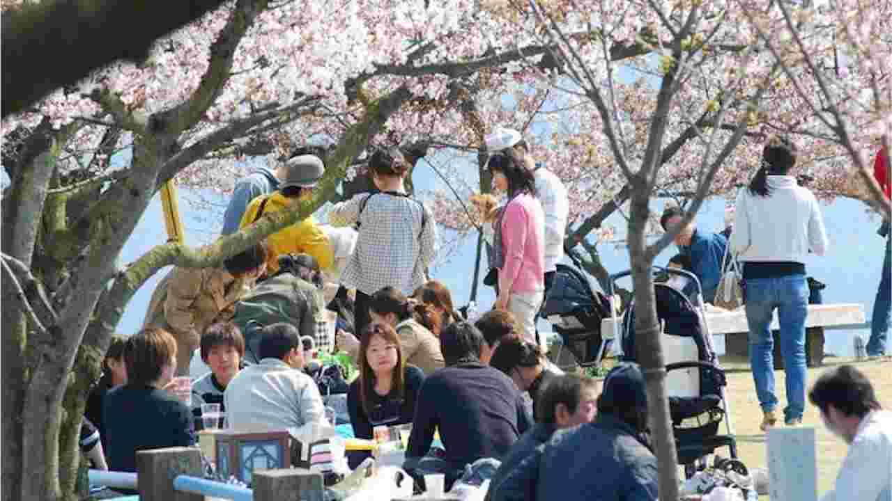
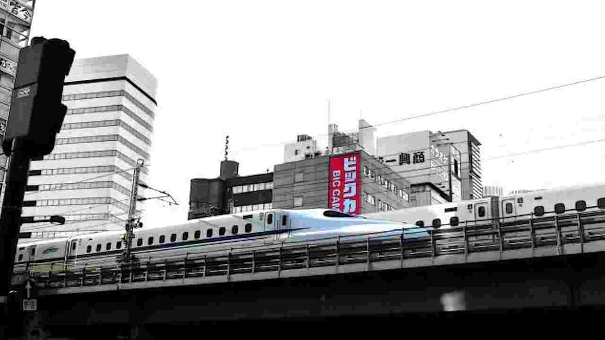
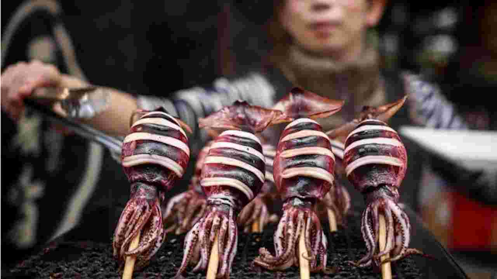
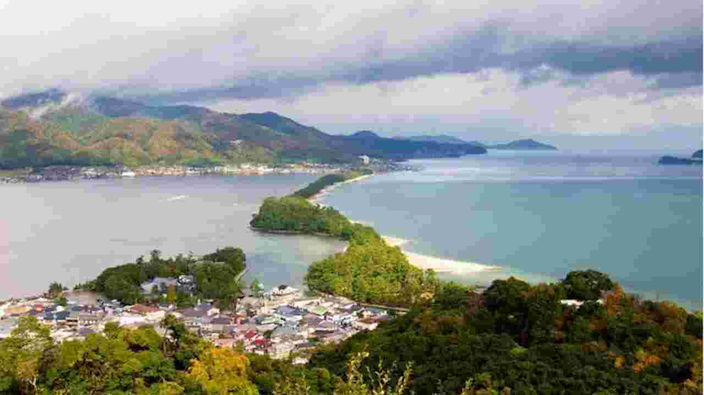
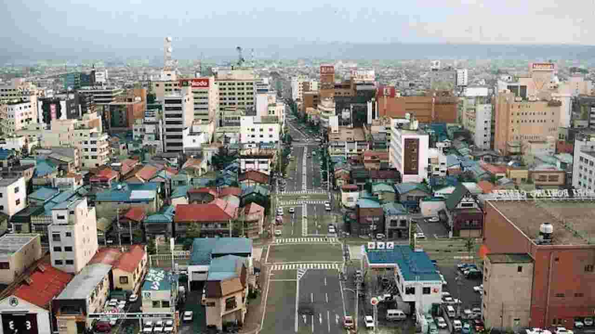

Pergi Trozz
|
|

Kemajuan Teknologi dan Budaya Yang Saling Berkolaborasi©japan |
Kemajuan Teknologi dan Budaya Yang Saling BerkolaborasiJepang mungkin menjadi satu-satunya negara dimana teknologi dan budaya saling berkolaborasi. Tidak semua negara bisa seperti ini loh. Yaps, kadang ada negara yang teknologinya maju tapi budaya nya jadi luntur, atau ada yang budayanya mengakar tapi teknologinya belum berkembang cukup pesat. Nah, Jepang bisa menggabungkan keduanya dengan sangat baik loh. Contohnya, di saat musim sakura kamu bisa menikmati “hanami” menikmati bunga sakura di taman-taman yang berada di kawasan gedung-gedung pencakar langit. Kamu juga bisa menyaksikan para wanita mengenakan kimono. |
|

Transportasi yang Lengkap, Mudah Dijangkau dan Nyaman!©japan |
Transportasi yang Lengkap, Mudah Dijangkau dan Nyaman!Di Jepang, transportasi umum sangat banyak variannya. Seperti bus. kereta, pesawat dan kapal ferry. Kualitas transportasi di Jepang juga sangat nyaman. Bus maupun kereta sangat mudah kamu temui. Ketika kamu berkunjung ke Jepang, pastikan mencoba Shinkansen ya! Kereta cepat ini dikenal karena kedatangannya yang sangat tepat waktu loh. Untuk menaiki moda transportasi shinkansen, kamu harus memiliki JR Pass. Selain itu di Jepang juga menyediakan sewa sepeda bagi kamu yang ingin berkeliling. Pokoknya kalau ke Jepang nggak usah bingung masalah transportasi deh. |
|

Suka Berburu Kuliner Lezat? Jepang Surganya!©japan |
Suka Berburu Kuliner Lezat? Jepang Surganya!Mungkin kamu sudah sangat familiar dengan makanan khas Jepang yang menjamur di Indonesia. Tapi tentu rasanya akan jauh berbeda kalau makan di negara aslinya 🙂 Selain sushi, takoyaki, atau dorayaki, masih banyak sekali makanan Jepang yang kamu bisa coba. Coba jelajahi Tokyo dan Osaka di malam hari. Suka makan porsi besar? Bisa coba budaya Osaka “Kuidaore” makan dan minum sepuasnya sampai perut kamu nggak kuat 😛 Mu coba? |
|

Destinasi-Destinasi Seru Yang Akan Memanjakanmu!©japan |
Destinasi-Destinasi Seru Yang Akan Memanjakanmu!Yang dicari saat liburan tentu meng-explore berbagai destinasi baru. Di Jepang. kamu nggak akan kehabisan spot untuk dikunjungi selama disini. Destinasi terkenal seperti Disneyland, Disney Sea, Tokyo Tower, Fushimi Inari, Kuil Asakusa pasti sudah banyak kamu dengar. Kamu bisa coba destinasi-destinasi lain yang belum banyak terekspos loh. Seperti Amanohashidate, menjelajahi Miyajima, atau mengunjungi Kifune Shrine. Pokoknya Jepang penuh dengan panorama alam yang luarrr biasa mengagumkan deh! |
|

Salah Satu Negara Teraman©japan |
Salah Satu Negara TeramanJepang memang terkenal dengan mafia sejenis Yakuza. Tapi tahu nggak kalau Jepang merupakan negara teraman di dunia, bahkan jika dibandingkan dengan Amerika Serikat. Kamu bisa pergi ke minimarket saat tengah malam tanpa rasa khawatir, orang-orang di sini juga sangat mematuhi rambu lalu lintas. Kamu juga dapat meninggalkan tas di meja, dan tidak perlu khawatir meninggalkannya. Subarashii! |